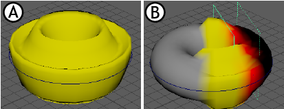

可以激活颜色可视化模式以进行变形器权重设置，从而直观地反馈变形效果。如果要进行变形器衰减疑难解答，这很有用。请参见创建变形器衰减。
为变形器启用权重可视化
- 选择应用了变形的几何体，然后在属性编辑器(Attribute Editor)中打开“形状”(Shape)选项卡（例如 pSphereShape1）。
- 展开“网格控制”(Mesh Controls)构件，然后从“权重可视化”(Weights Visualization)菜单中选择变形器。变形器权重显示为颜色渐变。变形器显示为均匀黄色，因为它均匀应用于几何体。如果使用变形器衰减，您将看到使用颜色显示的衰减区域。

应用波浪变形器的圆环 A. 应用“权重可视化”(Weights Visualization) B.应用“权重可视化”(Weights Visualization)和“基本体衰减”(Primitive Falloff)